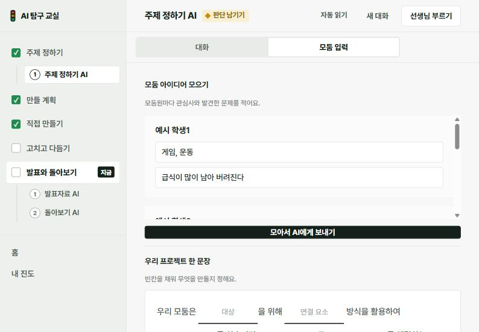
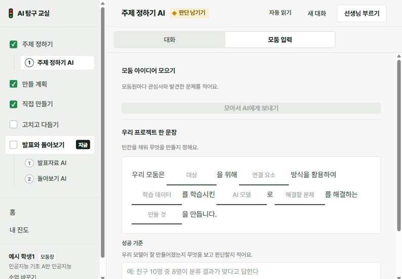
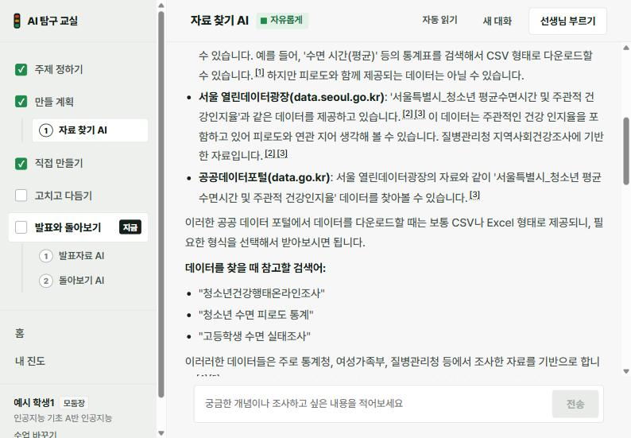
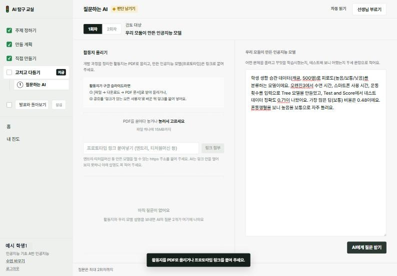
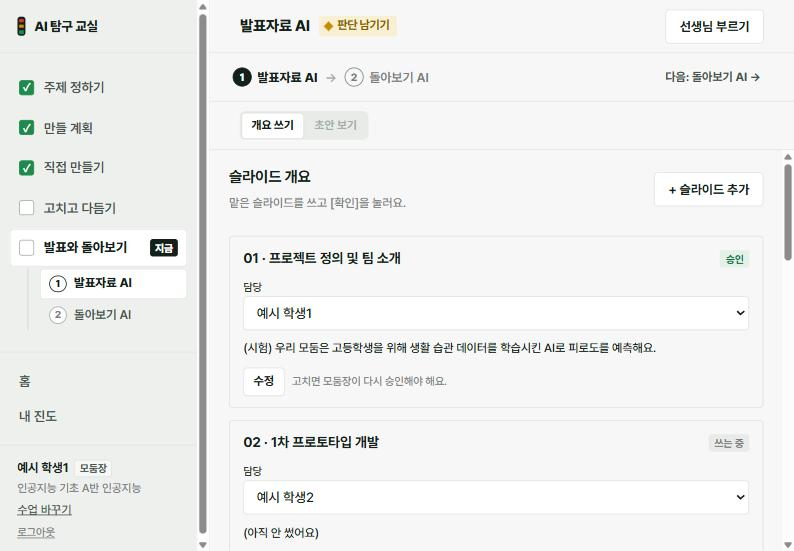
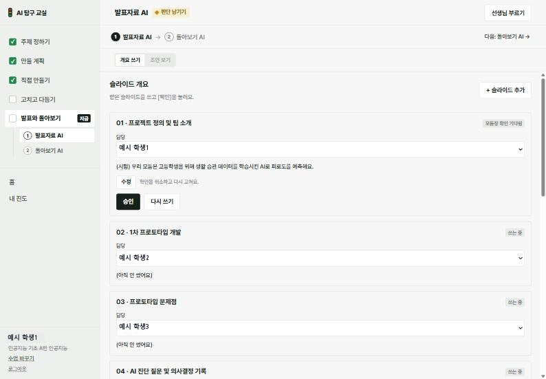
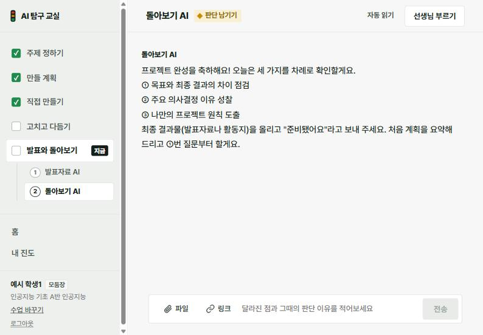

인공지능 프로젝트 — 오늘은 이 순서대로
이 쪽 하나만 켜 두면 돼요. 반을 고르면 오늘 차시가 열리고, 단계마다 할 일 · 프롬프트 · 실제 화면 · 바로 가기가 함께 있어요. 끝낸 단계는 «했어요»에 체크.
프로젝트 ① · 주제 정하기 · 데이터 찾기
«지금 차례» 1 → 31분에 20 / 7 단계
시작 — «인공지능» 수업 · AI 모둠 슬라이드 열기
0–3분AI 탐구 교실 → 수업 두 개 가운데 «인공지능». 🔑 내 계정에서 🤖 AI 활동지를 열어 둬요. 약속: AI는 플랫폼에서만, 판단은 우리가.
👤 나의 관심사와 문제 — AI 없이
3–11분내 이름 장 네 칸: SDG 세부 목표 번호 · 사용자 · 문제 · 예상 데이터와 출처, 그리고 «기계학습으로 풀 수 있나».
👥 주제 정하기 AI — 모둠장이 네 사람 생각을 모두
11–21분«주제 정하기 AI» → «모둠 입력» 탭 → 이름마다 관심사 · 발견한 문제(8칸) → 모아서 AI에게 보내기. AI가 준 조합마다 채택 · 수정 · 거절과 이유를 활동지에. 답했으면 «다음 단계 →».
주제가 정해지면 7쪽 «내 안은 어떻게 됐나»에 각자 이름과 한 줄.
💬 프롬프트 카드 주제 정하기 AI 노랑 눌러서 열기 · [ ]만 바꿔 복사
조합 [번호]로 할게요. [누구]의 [관심사]와 [누구]의 [발견한 문제]가 이어지기 때문이에요. 다만 [바꾸고 싶은 점]은 바꾸고 싶어요.
조합 [번호]는 거절할게요. [데이터를 구하기 어려워서 / 오렌지3로 만들기 어려워서 / 개인정보가 필요해서]예요.
우리는 오렌지3로 [데이터 이름]([행 수]행쯤)을 써서 [정답 열]을 [분류 / 예측]해요. 네 차시 안에 [만들 것]까지 만들 거예요.
입력은 [열 이름들], 처리는 [분류 / 예측 / 군집] 모델, 출력은 [사용자가 보는 결과]예요. 이 셋에서 빠진 것이 있는지 질문해 주세요.


주제 정의서 → 선생님 ✓
21–28분주제 · 해결할 문제 · 입력 → 처리 → 출력. 확인 기준 넷 — 오렌지3로 만들 수 있나 · 학습 유형이 분명한가 · 데이터를 구할 수 있나 · 개인정보 없이 되나. 손 들면 선생님이 ✓.
학습 유형과 정답 열
28–31분«왜 이 기계학습인가» 장 맨 위 칸만 — 분류 / 예측 / 군집 + 맞힐 정답 열 이름. 이름이면 분류, 숫자면 예측, 정답이 없으면 군집.
데이터 찾기 1라운드 — 모둠원마다 하나씩
31–46분내 장의 «예상 데이터»를 하나씩 맡아 원래 누리집에서 CSV 내려받기 → 📁 작업 폴더 › 🤖 «AI 데이터 · 오렌지3 파일» → 체크리스트 위쪽(이름 · 기관 · 연도 · 주소 · 이용 조건).
💬 프롬프트 카드 자료 찾기 AI 초록 눌러서 열기 · [ ]만 바꿔 복사
[주제]로 [분류 / 예측] 모델을 만들려고 해. 한 행이 한 [사람 / 학교 / 날짜]이고 [정답 열] 열이 들어 있는 CSV(수백 행 이상)를 내려받을 수 있는 곳을 알려 줘. 연도별 평균 같은 통계표 말고.
[주제] 데이터를 공공데이터포털과 캐글에서 찾을 검색어를 한국어 3개, 영어 3개 알려 줘.
찾은 데이터 [데이터 이름]의 열은 [열 목록]이야. 정답 열로 쓸 수 있는 열과 개인정보라서 빼야 할 열을 어떻게 구분하는지 기준을 알려 줘.
[기준선 / 재현율 / 과적합]을 고등학생 눈높이로, [우리 주제] 예시를 넣어 설명해 줘.

🚦 데이터 신호등 · AI 사용 기록
46–50분체크리스트 제목 옆에 🟢 파일 + 정답 열 · 🟡 후보만(다음 시간 13분까지) · 🔴 없음 → 학교 데이터셋. «AI 사용 기록» 한 줄씩. 숙제: 내 장 «개념 정리».
프로젝트 ② · 데이터 다듬기 · 계획 · 1차 모델
«지금 차례» 2 → 45분에 4 · 오늘은 AI 없이0 / 6 단계
데이터 수집 마무리 · ⏰ 13분 규칙
3–13분🟡 모둠은 13분까지 파일 구하기 — 13분에 오렌지3에서 안 열리면 학교 데이터셋. 🟢 모둠은 바로 File → Data Table로 보기: 머리글 한 줄 · 합계 · 단위 행 없음 · 한 행 = 한 대상.
💬 프롬프트 카드 자료 찾기 AI 초록 눌러서 열기 · [ ]만 바꿔 복사
[주제]로 [분류 / 예측] 모델을 만들려고 해. 한 행이 한 [사람 / 학교 / 날짜]이고 [정답 열] 열이 들어 있는 CSV(수백 행 이상)를 내려받을 수 있는 곳을 알려 줘. 연도별 평균 같은 통계표 말고.
[주제] 데이터를 공공데이터포털과 캐글에서 찾을 검색어를 한국어 3개, 영어 3개 알려 줘.
찾은 데이터 [데이터 이름]의 열은 [열 목록]이야. 정답 열로 쓸 수 있는 열과 개인정보라서 빼야 할 열을 어떻게 구분하는지 기준을 알려 줘.
[기준선 / 재현율 / 과적합]을 고등학생 눈높이로, [우리 주제] 예시를 넣어 설명해 줘.
🧹 전처리 다섯 걸음 — 오렌지3 안에서
13–28분- 보기 — File · Data Table
- 열 고르기 — Select Columns: 개인정보 · 쓸모없는 열 빼기, 정답 열은 Target
- 결측 — Feature Statistics로 빈칸 찾기 → Impute로 채우기 또는 Select Rows로 지우기
- 이상값 — 튀는 값이 진짜인지 실수인지 판단
- 저장 — Save Data로 «전처리.csv» → 🤖 폴더
무엇을 왜 했는지 체크리스트 «X면 보완» 칸에 한 줄.
계획서 ✓ — 성공 기준은 기준선보다 높게
28–33분쓸 열 · 훈련 : 테스트 · 성공 기준(지표 + 목표 숫자 + 기준선) · 역할표 «맡은 위젯». 기준선 = 전부 가장 많은 답이라고 찍었을 때 점수(예: 240 ÷ 500 = 0.48).
🍊 1차 모델 — 완성 워크플로에서 File만 바꾸기
33–45분우리 학습 유형의 .ows를 열고 맨 앞 File만 전처리 파일로 → 테스트 데이터로 잰 점수가 1차 점수(Test on train data 아님). 워크플로 · Test and Score 캡처 → «오렌지3 프로토타입» 장, «평가지표 분석» 1차 칸에 숫자.
정리 — 1차 점수 · AI 사용 기록
45–50분«평가지표 분석» 1차 칸에 점수가 있나 다시 확인. «AI 사용 기록»에는 «오늘 AI 안 씀». 다음 시간 🏆 리더보드의 출발점이에요.
프로젝트 ③ · 평가 해석 · AI 반문 · 개선 · 발표 준비
«지금 차례» 4 → 37분에 50 / 9 단계
🏆 개선 리더보드 — 1차 점수 칠판에
0–3분오늘 경쟁은 1차에서 얼마나 좋아졌나(%). 이유 없는 점수는 순위에서 빠져요.
평가지표 분석 1차
3–9분«평가지표 분석» 1차 칸 — 점수 · 기준선 · 혼동행렬에서 가장 많이 틀린 곳 · 성공 기준을 넘었나. 이게 질문하는 AI에 넣을 재료예요.
질문하는 AI — 활동지 PDF 올리기
9–12분활동지 파일 → 다운로드 → PDF → 왼쪽에 끌어 놓기 → 오른쪽 칸에 모델 설명 세 문장 → AI에게 질문 받기. 질문은 2회차까지.
💬 프롬프트 카드 질문하는 AI 노랑 눌러서 열기 · [ ]만 바꿔 복사
우리는 [데이터 이름, 행 수]로 [정답 열]을 [분류 / 예측]하는 모델을 만들었어요. 입력 열은 [열들]이고 [모델 이름]을 썼어요. 테스트 데이터 [지표]는 [점수](기준선 [숫자])이고, 혼동행렬을 보니 실제 [○○]를 [△△]로 자주 틀려요.
[몇 번] 반문을 받아들여요. 오렌지3에서 [바꾼 것 하나]를 바꿔 보니 [지표]가 [전]에서 [후]로 바뀌었어요.
[몇 번] 반문은 거절해요. 우리 데이터는 [사실]이라서 맞지 않아요. 근거는 [숫자 / 화면]이에요.
[몇 번] 반문은 아직 판단을 못 했어요. [무엇]을 확인하면 좋을지 질문으로 좁혀 주세요.
1회차 뒤에 [바꾼 것]을 바꿔 [지표]가 [전]에서 [후]가 됐어요. 남은 약점은 [약점]이에요.

1회차 — 반문을 오렌지3로 확인하고 판단
12–21분반문마다 먼저 오렌지3로 테스트 → 채택 · 수정 · 거절과 근거. 🎯 우리 데이터와 맞지 않는 함정 질문은 근거를 대고 거절. 칠판 «지금» 칸 갱신.
👤 내 개선 실험 — 한 번에 하나만
21–33분내 줄에 가설 · 조작 · 결과 · 해석 + 편향 유형 하나(확증 · 선택 · 역사적 · 생존자). 두 가지를 한꺼번에 바꾸지 않아요. 모둠 «회차별 변경 기록»에 2회차.
최종 점수 · 사용 시나리오 한 장면
33–37분«평가지표 분석» 최종 칸에 1차 · 최종 · 기준선 나란히, 성공 기준을 넘었나. «사용 시나리오» — 무엇을 넣고, 무엇을 보고, 틀리면 누가 확인하나. 36분 리더보드 마감.
🏆 시상 · 🎯 근거 있는 거절
37–39분가장 많이 좋아진 모둠 · 가장 설득력 있게 거절한 모둠.
발표 흐름 2분 → 발표자료 AI
39–48분흐름 먼저: 문제 → 왜 이 기계학습 → 성능과 평가지표 → AI 반문으로 고친 과정 → 한계. 그다음 발표자료 AI — 내 이름이 담당인 칸을 저장 → 확인, 모둠장이 승인, 7칸이 다 승인되면 초안. 마지막 장 «출처와 AI 활용» 꼭.
💬 프롬프트 카드 발표자료 AI 노랑 눌러서 열기 · [ ]만 바꿔 복사
오렌지3 [File → … → Test and Score] · 모델 [이름] · 1차 [지표] [점수] (기준선 [숫자])
혼동행렬에서 실제 [○○]를 [△△]로 [몇]번 틀림 — 까닭은 [우리 추측]
질문하는 AI가 «[반문]»을 물음 → 우리는 [채택 / 거절] · 이유 [근거]
[바꾼 것] → [지표] [1차]에서 [최종] · 틀리면 [누가 피해] → [보완]


AI 사용 기록 — 쓴 사람 이름까지
48–50분이 슬라이드가 그대로 다음 시간 발표 자료. 질문은 누구에게 갈지 몰라요.
프로젝트 ④ · 발표 · 돌아보기
«지금 차례» 50 / 7 단계
발표 자료 최종 점검
3–7분발표할 장만 남기고 «슬라이드 건너뛰기» · 마지막 장 출처와 AI 활용 · 발표자료 AI 초안이면 우리가 고친 곳 · 지표 숫자 하나.
🎤 발표 2분 + 질문 1분 30초 × 7모둠
7–32분듣는 모둠은 💰 투자 심사 판에 기록. 우리 차례가 아니어도 우리 지표 숫자로 답할 준비. 우리가 받은 질문은 바로 메모 — 수행평가에서 고칠 거리예요.
돌아보기 AI — 파일 올리고 «준비됐어요»
34–42분«파일»로 활동지 PDF → «준비됐어요» → 질문 셋에 내 말로. 성찰은 활동지 맨 뒤 내 칸에.
💬 프롬프트 카드 돌아보기 AI 노랑 눌러서 열기 · [ ]만 바꿔 복사
준비됐어요
처음 성공 기준은 [기준]이었는데, 결과는 [최종 점수]예요. 달라진 까닭은 [까닭]이에요.
가장 중요했던 결정은 [결정]이에요. 그때 [숫자 / 화면]을 근거로 판단했어요.
다음 프로젝트에서 나는 [원칙]을 지킬 거예요. 이번에 [겪은 일]을 겪었기 때문이에요.

👤 자기평가 — 활동지 내 칸
42–46분교과서 209쪽 평가표 세 영역으로 우리 모둠 진단 → 활동지 «돌아보기 AI 성찰과 자기평가» 내 칸에 한 줄. 성적과 무관.
AI 사용 기록 · 다음 주 수행평가 ②
46–50분같은 모델을 내 코랩으로 다시 만들어요. 오렌지3 파일 · 워크플로를 지우지 마세요.
수행평가 ② · 1/3 · 피드백 반영 계획 · 코랩 재구현 (요소 2)
AI는 검색 · 요약만0 / 5 단계
수행평가 ② 안내 — 세 차시 · 마지막은 발표
10–13분① 오늘: 피드백 반영 계획 + 코랩 재구현 ② 다음: 비교 · 개선 + 보고서 · 발표자료(구술 ①) ③ 마지막: 발표 + 무작위 구술 ②.
👥 피드백 반영 계획 — 무엇을 왜 바꿀까
13–20분프로젝트 ④ 발표에서 받은 선생님 질문 · 💰 투자 심사 의견 · 돌아보기에서 쓴 «다음에 바꿀 점»을 모아요 → 바꿀 것 1~2개만 골라 발표자료에 «피드백 반영» 장 한 장:
- 받은 피드백 — 누가 · 무엇을
- 방향 — 문제 정의 · 데이터 · 모델 · 지표 · 윤리 가운데 무엇을
- 방법 — 다음 시간 개선 실험에서 무엇을 바꿔 볼지
- 맡은 사람
👤 내 코랩 노트북 — 네 단계
20–48분코랩 틀 → 파일 → 드라이브에 사본 저장(수행2_모둠번호_이름) → 우리 팀 CSV 올리기 → 빈칸(____) 채우기 → 셀마다 # [오렌지3] 위젯 이름 · 담당: 이름. 막히면 대조표에서 내 위젯 찾기 · 교과서 기아 예측 예제와 같은 순서.
실행 확인 · 공유 링크 제출
48–50분런타임 → 모두 실행에서 점수까지 나오나 → 공유 링크 제출. 못 끝났으면 다음 시간 처음 5분.
수행평가 ② · 2/3 · 비교 · 개선 · 보고서와 발표자료 + 구술 ① (요소 3 · 4)
AI는 검색 · 요약만0 / 5 단계
개선 실험 한 건 — 피드백 + 편향
15–28분지난 시간 «피드백 반영» 장에서 고른 것 + 편향 유형 하나(확증 · 선택 · 역사적 · 생존자) → 가설 · 조작 · 결과 · 해석. 한 번에 하나만 바꿔요.
보고서 내 구간 + 발표자료 고치기 — 그동안 구술 ①
28–47분보고서: 내 구간 반쪽 + 이름 + AI 활용 내역(단계 · 신호등 · 요청 · 채택 여부). 발표자료: 프로젝트 ④ 슬라이드에 «피드백 반영 · 코랩 재구현 · 개선 결과» 장 더하기 — 새로 만들지 않아요.
마지막 장 · 발표 순서 추첨
47–50분출처 · AI 활용 범위 장 확인. 다음 시간은 발표 — 누구든 답할 수 있게.
수행평가 ② · 3/3 · 모둠 발표 + 구술 ② — 마지막 차시
0 / 4 단계
🎤 7모둠 발표 + 무작위 구술
3–40분발표 2분 = 피드백으로 무엇을 바꿨나 → 코랩 재구현 → 개선 결과(숫자). 우리 지표 · 맡은 위젯 · 개선 실험으로 누구든 답할 수 있게.
마무리
47–50분못 한 구술은 다음 시간(마무리 · 보충)에.

made by ptp 🐰